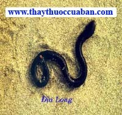

Tên khác:
Tên thường gọi: Vị thuốc Địa long còn gọi Thổ long (Biệt Lục), Địa long tử (Dược Tính Luận), Hàn hán, Hàn dẫn, Phụ dẫn (Ngô Phổ Bản Thảo), Cẩn dần, Nhuận nhẫn, Thiên nhân đạp (Nhật Hoa Chư Gia Bản Thảo), Kiên tàm, Uyên thiện, Khúc thiện, Thổ thiện, Ca nữ (Bản Thảo Cương Mục), Dẫn lâu, Cận tần, Minh thế, Khước hành, Hàn hân, Khưu (khâu) dẫn, Can địa long, Bạch cảnh khâu dẫn (Trung Quốc Dược Học Đại Từ Điển), Giun đất, Trùn đất (Dược Điển Việt Nam).
Tên khoa học: Lumbricus.
Họ khoa học: Megascolecidae.
Con địa long
( Mô tả, hình ảnh con địa long, thu bắt, chế biến, thành phần hoá học, tác dụng dược lý ....)
Mô tả:
Các loài giun đất chỉ Lumbricus thuộc họ Lumbricidae và chi
Pgeretima thuộc họ Megascolecidae đều được dùng làm thuốc. Chi giun ở nước ta
mới đ 
Thu bắt, sơ chế:
Đào lấy thứ khoang cổ, loại gìa. Hay gặp nơi mô đất ẩm, đền đình chùa, gốc bụi chuối lâu năm. Muốn bắt dễ dàng, lấy nước lá Nghễ răm hay nước Bồ kết, nước Chè, ngâm nước đổ lên đất thì giun bò trườn lên. Người ta bắt bỏ nó vào thùng có chứa sẵn lá tre, rơm hoặc tro, rồi rửa sạch bằng nước ấm cho sạch chất nhớt, ép đuôi vào gỗ sau đó mổ dọc thân giun, rửa sạch đất trong bụng, phơi hoặc sấy khô cất dùng. Không dùng giun tự nhiên lên mặt đất (có bệnh mới lên).
Mô tả dược liệu:

Giun đất, địa long được biết đến là một vị thuốc quý. Toàn thể đã được cắt phẫu, biểu hiện một phiến dài nhỏ cong nhăn teo, dài chừng 12cm-20cm, rộng chừng 10mm-17mm, toàn thân có nhiều khoang vòng, hai đầu dầy mà cứng còn có sợi thịt mỏng tồn tại, chính giữa rất nhỏ, bán trong suốt, hai bên có màu đen tro, chính giữa màu vàng nâu, chất thu khó bẻ gẫy.
Bào chế:

1- Khi dùng Khâu dẫn, nếu muốn uống phải dùng khô, sao cho khô và làm vụn đi (Danh Y Biệt Lục).
2- Dùng 16 lượng Địa long, ngâm nước vo gạo 1 đêm, vớt ra để khô tẩm rượu một ngày sấy khô, rồi sao chung với Xuyên tiêu, gạo Nếp, mỗi thứ 2 chỉ rưỡi. Hễ gạo nếp chín vàng là được (Lôi Công Bào Chế).
3- Khi dùng sậy khô tán bột, hoặc trộn muối vào cho hóa ra nước, hoặc đốt tồn tính, tùy theo trường hợp mà dùng (Bản Thảo Cương Mục).
4- Ngày nay người ta dùng bằng cách sau khi chế sơ chế xong tẩm rượu hoặc tẩm gừng sao qua tán bột để dùng (Trung Dược Đại Từ Điển).
Bảo quản:
Tránh ẩm, đựng lọ kín.
Cách dùng:

Sắc uống nước, gĩa sống hoặc tán bột trộn vào hoàn tán.
Thành phần hoá học
Lumbroferine, Lumbritin, Terrestro-lumbrolysin, Hypoxathine, Xan thine, Adenine, Guanine, Choline, Guanidine, nhiều loại Acid amin, Vitamin và muối hữu cơ (Trung Dược Học).
Lumbritin, Lumbofebin, Terrestro-lumrilysin (Sinh Dược Học Khái Luận (Nhật Bản), Nhật Bản Nam Giang Đường 1990: 354).
Hypoxanthine, Xanthine, Adenine, Guanine, Guanidine, Choline, Alanine, Valine, Leucine, Phenylalanine, Tyrosine, Lysine (GiangTô Tân Y Học Viện, Trung Dược Đại Từ Điển (Q. Hạ), Thượng Hải Nhân Dân Xuất Bản 1977: 2111).
Tác dụng dược lý
Tác dụng hạ nhiệt, an thần (Trung Dược Học).
Tác dụng đối với phế quản: thuốc làm gĩan phế quản nên có tác dụng hạ cơn suyễn (Trung Dược Học).
Thuốc có tác dụng hạ huyết áp chậm mà lâu dài, có thể do làm gĩan mạch nội tạng (Trung Dược Học).
Thuốc có tác dụng kháng Histamin và chống co giật (Sổ Tay Lâm Sàng Trung Dược).
Thuốc làm tăng hoạt tính dung giải của Fibrin chống hình thành huyết khối. Có tác dụng hưng phấn tử cung, chất chiết xuất diệt tinh trùng (Sổ Tay Lâm Sàng Trung Dược).
Thuốc có tác dụng phá huyết do chất Lumbritin (Nhật Bản 1911).
Tác dụng giải nhiệt: cho uống 12g bột Địa long, thấy có tác dụnghạ sốt. Đối với bệnh nhân sốt do cảm nhiễm, cho uống 0,3g thấy có tác dụng giảm sốt. Tác dụng giảm sốt xuất hiện sau nửa giờ đến 3 giờ, từ 2-5 giờ thì hết sốt, trở lại bình thường (Phó Tuấn Lục, Thiểm Tây Trung Y 1980, 10 (3): 138).
Tác dụng đối với hệ thần kinh trung ương: Trị trúng phong (não thốt trúng khuyết huyết tính). Dùng dịch Địa long chích 10g/kg vào khoang bụng chuột bị chứng não thiếu máu bị trúng phong, thấy các triệu chứng giảm nhẹ (Uông Bội Căn, Sơn Tây Y Dược tạp Chí 1984, 13 (3): 133).
Vị thuốc địa long
(Công dụng, tính vị, quy kinh, liều dùng .... )
Tính vị:

Vị mặn, tính hàn (Bản Kinh).
Tính rất hàn, không độc (Danh Y Biệt Lục).
Vị đắng, cay, tính hàn (Trấn Nam Bản Thảo).
Vị mặn. Tính hàn (Trung Dược Học)..
Quy kinh:
Vào kinh Tỳ (Bản Thảo Cầu Chân).
Vào kinh Can, Tỳ, Phế (Bản Thảo Tái Tân).
Vào kinh Vị, Thận (Dược Nghĩa Minh Biện).
Vào3 kinh Tỳ, Vị, Thận (Trung Dược Học).
Công dụng:
Đại giải nhiệt độc, hành thấp bệnh (Bản Thảo Giảng Nghĩa Bổ Di).
Thanh Thận, khứ nhiệt, thấm thấp, hành thủy, trừ thấp nhiệt ở Tỳ Vị, thông đại tiện thủy đạo(Y Lâm Toản Yếu).
Trừ phong thấp, đờm kết, khứ trùng tích, phá huyết kết (Đắc Phối Bản Thảo).
Thanh nhiệt, trấn kinh, lợi niệu, giải độc (Trung Dược Học).
Chủ trị:
Trị sốt cao phát cuồng, động kinh co giật, hen phế quản, di chứng bại liệt nửa người, đau nhức do phong thấp, tiểu không thông.
Liều lượng: 8-12g.
Trường hợp loét hạ chi mãn tính, dùng Giun đất tươi đâm nhuyễn với đường cát trắng đắp bên ngoài.
Ứng dụng lâm sàng của vị thuốc địa long
Trị thương hàn nhiệt kết 1-7 ngày, nổi cuồng nổi loạn thấy ma qủy muốn bỏ chạy:
Khâu dẫn nửa cân bỏ đất bùn, lấy nước Đồng tiện nấu uống, hoặc dùngsống gĩa vắt lấy nước cho uống (Trửu Hậu Phương).
Trị tinh hoàn sưng hoặc thụt vào trong bụng, đau nhức khó chịu, thân thể nặng nề, đầu không thể dậy được, bụng dưới nóng đau, co thắt muốn chết:
Khâu dẫn 24 con, sắc với một đấu nước còn 3 thăng, uống ngay. Hoặc lấy Khâu dẫn thật nhiều, gĩa vắt lấy nước uống (Trửu Hậu phương).
Trị tiêu ra huyếtdo cổ độc:
Khâu dẫn 14 con, 3 thăng giấm, ngâm cho tới khi Giun chết, lấy nước đó uống (Trửu Hậu phương).
Trị tay chân sưng đau muốn rời ra:
Giun đất 3 thăng, 5 thăng nước, gĩa vắt lấy nước 1 thăng rưỡi uống (Trửu Hậu phương).
Trị răng đau nhức:
Giun đất, tán bột xức vào (Thiên Kim phương).
Trị mắt đỏ đau:
Dùng Địa long 10 con sao tán bột, uống với nước trà 3 chỉ (Thánh Huệ phương).
Trị lợi răng chảy máu không cầm:
Bột Địa long, Khô phàn mỗi thứ 4g, Xạ hương một ít, nghiền đều, xức vào một ít (Thánh Huệ phương).
Trị ngón tay đau nhức:
Khâu dẫn gĩanhỏ,đắp vào (Thánh Huệ phương).
Trị lưỡi sưng cứng, không trị có thể chết người:
Khâu dẫn 1 con, lấy muối hòa vào ngậm, sẽ giảm từ từ (Thánh Huệ phương).
Trị họng, thanh quản sưng đột ngột không ăn được:
Địa long 14 con, gĩa nát, đắp ngoài họng, lại lấy 1 con hòa nước muối bỏ vào chút mật ong uống (Thánh Huệ phương).
Trị tai chảy mủ:
Địa long (còn sống) nghiền nát, trộn với nước Hành và mỡ heo, bọc bông nhét vào tai, hoặc dùng bột Địa long thổi vào (Thánh Huệ phương).
Trị trĩ mũi:
Địa long sao 0,4g, Nha trạo 1 miếng, tán bột, trộn với ít mật ong, hòa ít nước lạnh, nhỏ vào lỗ mũi (Thánh Huệ phương).
Trị ráy tai khô cứng không ra:
Khâu dẫn, bỏ vào trong lá Hành, nghiền nát,hòa thành nước, nhỏ vào đầy lỗ tai vài lần thì ra (Thánh Huệ Phương).
Trị côn trùng vào tai:
Địa long tán bột, bỏ vào trong Hành, hòa thành nước,nhỏ vào (Thánh Huệ phương).
Trị dương độc kết tụ ở hông, đè vào rất đau, thở như suyễn, táo bón, cuồng loạn:
Địa long sống 4 con, rửa sạch, nghiền nát như bùn, thêm một ít gừng tươi, một muỗng mật ong, một ít nước Bạc hà, lấy nước mới lấy ở dòng sông lên, nấu sôi quá thì thêm một ít Phiến não, mồ hôi ra thì đỡ, không đỡ dùng tiếp (Thương Hàn Uẩn Yếu phương).
Trị đau nhức do đầu phong:
Vào ngày mùng 5 tháng 5, chọn Khâu dẫn, trộn với một ít Long não, Xạ hương, làm thành viên to bằng hạt ngô đồng lớn. Mỗi lần lấy 1viên trộn với nước gừng, nhét vào trong lỗ mũi. Đau bên phải nhét bên trái và ngược lại (Long Châu Hoàn - Thánh Tễ Tổng Lục).
Trị điếc do bế khí:
Khâu dẫn, Xuyên khung, mỗi thứ 20g, tán bột, mỗi lần uống 8g với nước sắc Mạch môn (Thánh Tế Tổng Lục).
Trị ứ huyết do thấp đàm, kinh lạc ứ tắc gây đau:
Xuyên ô đầu, Thảo ô đầu, Địa long, Thiên nam tinh, mỗi thứ 8g, Nhũ hương, Một dược, mỗi thứ 6g. Tán bột, chưng với rượu hồ làm thành viên. Mỗi lần uống 1 viên với nước sắc Kinh giới hoặc Tứ Vật Thang (Hoạt Lạc Đơn – Hòa Tễ Cục Phương).
Trị đầu đau do phong nhiệt:
Địa long sao, tán bột, nước Gừng, Bán hạ, Xích phục linh các vị bằng nhau, tán bột, uống 2-4g với nước Sinh khương, Kinh giới, Bạc hà (Phổ Tế phương).
Trị răng sâu đau:
Địa long, hòa nước muối, trộn Miến, nhét vào trên răng (Phổ Tế phương).
Trị trẻ nhỏ bị động kinh cấp:
Khâu dẫn tươi 1 con, gĩa nát, bỏ vào 1 viên Ngũ Phước Hóa Độc Đơn, tán bột, rồi sắc uống với nước sắc nước Bạc hà (Ngũ Phước Hoàn – Phổ Tế Phương).
Trị kinh phong, phiền loạn, trẻ con kinh phong mạn tính, tâm thần buồn bực, phiền não, gân mạch co quắp, vị hư, ký sinh trùng trong ruột quậy, uốn ngược mình mà la hét:
Nhũ hương 2g, Hồ phấn 8g. Nghiền đều, lấy Khâu dẫn khoang cổ, gĩa nát, trộn thuốc bột làm thành viên to bằng hạt mè lớn. Mỗi lần uống 7-15 viên với nước Hành sắc (Nhũ Hương Hoàn - Phổ Tế phương).
Trị họng sưng nghẹt:
Lấy Giun đất nghiền với dấm ăn, cho nuốt dần, mửa ra đàm máu thì tốt (Phổ Tế phương).
Trị da đầu nổi vẩy trắng:
Bột Địa long, cho vào một ít Khinh phấn, trộn với dầu mè, xức vào (Phổ Tế phương).
Trị viêm quầng (đơn độc): Khâu dẫn 1 con, để nguyên đất, gĩa nhuyễn,đắp vào (Phổ Tế Phương).
Trị sốt rét bứt rứt, bón nhiều:
Địa long sống 4 con, rửa sạch, nghiền nát như bùn, thêm một ít gừng tươi, một muỗng mật ong, một ít nước Bạc hà, lấy nước mới lấy ở dòng sông lên, nấu sôi quá thì thêm một ít Phiến não, mồ hôi ra thì đỡ, không đỡ dùng tiếp, rất có hiệu quả (Trực Chỉ phương).
Trị tiểu không thông:
Khâu dẫn, gĩa nát, ngâm nước lọc lấy nước cốt nửa chén, uống ngay (Đẩu Môn phương).
Trị người lớn tuổi bị bí tiểu:
Giun đất khoang cổ trắng, Hồi hương, 2 vị bằng nhau, gĩa ép lấy nước uống (Châu Thị Tập Nghiệm phương).
Trị trẻ nhỏ bí tiểu do nhiệt kết:
Địa long loại lớn, quết như bùn, bỏ vào một ít mật ong, đắp ở ngọc hành và dịch hoàn. Đốt Tàm thoái 4g, Chu sa, Long não, Xạ hương, mỗi thứ một ít, lấy Mạch môn, Đăng tâm sắc nước uống với thuốc (Toàn Ấu Tâm Giám phương).
Trị kinh phong mạn tính suy nhược quá:
Phụ tử bỏ vỏ, rốn, nghiền sống, lấy Khâu dẫn khoang trắng bỏ trong đó mà lăn, cạo bột Phụ tử dính phía trên Khâu dẫn, làm viên to bằng hạt gạo, mỗi lần uống 10 viên với nước cơm (Bách Nhất Tuyển Phương).
Trị kinh phong cấp, mạn tính:
Ngày mồng 5 tháng 5, chọn Khâu dẫn, lấy dao tre cắt làm hai đoạn, đoạn nhảy nhanh để ra một bên, đoạn nhảy chậm để ra một nơi, nghiền nát riêng, bỏ vào một ít bột Chu sa, làm thành viên. Cần nhớ là nếu cấp kinh phong thì dùng bột của đoạn nhảy chậm, mỗi lần uống 5-7 viên với nước sắc Bạc hà (Kinh Nghiệm phương).
Trị trẻ nhỏ tinh hoàn bị sưng:
Địa long còn nguyên đất, quết nhuyễn, trộn nước đắp vào (Tiểu Nhi Dược Chứng Trực Quyết).
Trị đau một bên hay chính giữa đầu không chịu đựng được:
Dùng Địa long bỏ đất, sấy khô, Nhũ hương các vị bằng nhau, tán bột. Mỗi lần dùng 2g, vấn lại như vấn thuốc hút, để lên lửa đèn, lấy mũi hít hơi khói ấy (Thánh Huệ Long Hương Tán - Chiêm Liệu phương).
Trị răng đau, răng lung lay:
Địa long khô, sao, Ngũ bội tử sao, hai vị bằng nhau, tán bột , trước hết lấy Gừng tươi xát vào răng, sau đó xức thuốc bột vào Ngựcï Dược Viện phương).
Trị điếc đột ngột:
Khâu dẫn bỏ vào muối, hành, trộn chung thành nước, lấy nước đó, nhỏ vào tai (Thắng Kim phương).
Trị hạch lao ở cổ lở chảy nước:
Dùng đoạn dưới của rễ Kinh giới sắc nóng rửa. Dùng lá Hẹ trên đất có Khâu dẫn 1 nắm, hái lúc canh năm, để trên lửa hồng, cho khô. Tán bột. Mỗi một muỗng bỏ vào Nhũ hương, Một dược, Khinh phấn mỗi thứ 2g, Xuyên sơngiáp 9 miếng vẩy, sao, tán bột, trộn với dầu xức vào (Bảo Mệnh Tập phương).
Trị nhện cắn bị thương:
Lấy 1 lá Hành, bỏ đầu nhọn, đem Khâu dẫn bỏ vào trong ống lá, ép 2 đầu đừng để cho mất hơi, lắc cho ra nước,bôi vào nơi chỗ cắn (Đàm Thị Tiểu Nhi phương).
Trị sa trực trường dương chứng:
Lấy Kinh giới, Sinh khương sắc rửa, lấy Địa long (bỏ đất) 40g, Phác tiêu 8g, tán bột, trộn với dầu bôi vào (Toàn Ấu Tâm Kính phương).
Trị phong cùi đau, ngứa:
Khâu dẫn khoang trắng (bỏ đất), lấy Táo nhục nghiền nát, trộn làm thành viên to bằng hạt ngô đồng lớn, mỗi lần uống 60 viên với rượu. Cử ăn gừng, tỏi, (Hoạt Nhân Tâm Thống phương).
Trị nhọt độc đã vỡ mủ:
Lá Hẹ trên đất có giun đất, gĩa nát lấy nước đắp vào, ngày thay 3-4 lần (Phù Thọ Tinh phương).
Trị nhọt độc đã vỡ miệng:
Địa long, Ngô thù du, tán bột, trộn dấm, hòa với Miến sống đắp dưới lòng bàn chân (Trích Huyền phương).
Trị sốt cao co giật:
Địa long 10g, Toàn yết 3g, Câu đằng, Kim ngân hoa đều 12g, Liên kiều 10g, sắc uống. Hoặc dùng Địa long 100g, Chu sa 30g, tán nhuyễn, làm viên. Mỗi lần uống 3g (Lâm Sàng Thường Dụng Trung Dược Thủ Sách).
Trị hen suyễn:
Địa long 12g, sắc uống hoặc dùng bột Địa long khô, mỗi lần 3-4g, ngày uống 2 lần. Hoặc dùng Địa long, Cam thảo tươi, lượng bằng nhau, sấy khô, tán bột, mỗi lần uống 4—5g. Ngày hai lần (Lâm Sàng Thường Dụng Trung Dược Thủ Sách).
Trị sỏi đường tiểu:
Địa long đỏ, Củ tỏi, Lá khoai lang đỏ, lượng vừa đủ, gĩa nát, đắp vùng bụng dưới, kết hợp uống thêm thuốc lợi tiểu (Sổ Tay Lâm Sàng Trung Dược).
Trị huyết áp cao:
Uống cao lỏng Địa long 40%, mỗi lần 10ml, ngày 3 lần, đạt kết quả tốt (Mao Văn Hồng, Thượng Hải Trung Y Dược Tạp Chí 1959, 4: 39).
Trị động kinh do chấn thương:
Địa long khô 3-6g, sắc uống mỗi ngày. Liệu trình 2-12 tháng, bình quân 5,5 tháng. Trị 20 ca, khỏi 16, chuyển biến tốt 3. tỉ lệ có kết quả 95% (Chu Văn Chính, Hà Bắc Y Dược Tạp Chí 1983, 3: 48).
Trị bệnh tâm thần phân liệt:
Địa long 30g, Đường trắng 10g, sắc, chia 2 lần uống sáng tối. Mỗi tuần uống 6 thang, 60 thang là một liệu trình, có kết hợp thuốc an thần. Trị 30 ca, kết quả trước mắt 18 ca, số có kết quả nhiều, có tiến bộ và không kết quả, mỗi thứ 4 ca. Tổ II dùng Địa long tiêm bắp, mỗi ngày 2 lần, mỗi lần 4ml (mỗi ml tương đương 1g thuốc), kết hợp với thuốc an thần liều nhỏ. Trị 50 ca, khỏi 11, có kết quả rõ 14, có tiến bộ 12, không kết quả 13.
Tổ III dùng nước sắc Địa long, uống giống như tổ I. trị 30 ca, kết quả khỏi 2, có kết quả 7, có tiến bộ 8, không kết quả 13. kết quả tốt hơn đối với suyễn ứ huyết thực chứng (Thế Đức, Triết Giang Trung Y Dược 1979, 11: 440).
Trị mề đay, dị ứng:
Dung dịch Địa long 100% chích bắp, mỗi lần 2ml, 10 lần là một liệu trình, thường trị 1-2 liệu trình. Theo dõi 100 ca, tỉ lệ kết quả đạt 84% (Tân Y Học Tạp Chí 1976, 4: 178).
Tham khảo:
Kiêng kỵ: Hư hàn mà không có thực nhiệt thì cấm dùng.
Phân biệt:
1- Ở Trung Quốc còn dùng các con Pheretima asiatica Michaelsen và Allolobophora caliginosa Trapezoides,.. thuộc họ Megasclo lecidae, để làm thuốc.
2- Cần phân biệt với Rắn giun là một giống rắn có tên khoa học là Tpholops. Thoáng nhìn, ta dễ lẫn rắn giun với giun đất vì rắn cũng có cỡ lớn và màu nâu thẫm bóng láng như giun. Nếu quan sátkỹ một chút, ta sẽ thấy thân rắn giun phủ vẩy như rắn. Đây là một loài rắn thực sự, do điều kiện sống chui dưới đất như giun, nên có hình dạng tương tự giun. Thân rắn giun hình trụ, có vẩy nhẵn bóng giúp con vật chui luồn dễ dàng. Mõm nhọn sắc, giúp con vật dễ khoan lỗ trong đất mềm. Đuôi ngắn có vẩy nhọn là chỗ tựa trên đất giúp rắn trườn về phía dưới. Mắt nhỏ ẩn dưới vẩy bên đầu, nên tránh khỏi sây sát khi rắn luồn trong đất. Rắn giun đào hầm dưới đất có khi sâu tới hàng mét và ăn các loại giun và sâu bọ ấu trùng ở đất. Người ta thường gọi là “Rắn hổ giun”, không cắn được người (Danh Từ Dược Học Đông Y)
Lưu ý khi dùng
Khâu dẫn vị mặn tính lạnh, có tác dụng giáng tiết, chạy xuyên suốt khắp kinh lạc lại có thể thanh nhiệt chống co giật, lợi tiểu, bình suyễn. Đào Hoằng Cảnh ghi rằng có thể khử giun sán rất hiệu quả. ‘Trửu Hậu Phương’ dùng nó để trị sưng tinh hoàn hoặc tinh hoàn thụt lên đau bụng thắt không chịu nổi. Vì vậy mà Khấu Tông Thích lại dùng trong các chứng bệnh phong đi xuống do thận. Ấy là những cái hiện nay chúng ta cần phải nghiên cứu thêm trong lâm sàng (Trung Dược Học Giảng Nghĩa).
Theo báo cáo mới đây, dùng Địa long kết hợp với các thứ sau có thể phòng trị chứng ung thư, như: Địa long, Ngô công, Phong phòng (tổ ong), Bồ công anh, Bản lam căn, Toàn yết, Xà thoái mỗi thứ 40g. Bạch hoa xà thiệt thảo nửa cân. Tán bột luyện mậtlàm viên, mỗi viên 8g. Uống sáng 1 viên, tối 1 viên với nước nóng. Lại có thể trị bệnh áp huyết cao, tán bột hoặc sắc uống (Sổ Tay Lâm Sàng Trung Dược).
Cao huyết áp tuyệt đối không nên kiêng những thứ này
Không còn lo lắng vì đột quỵ do huyết áp cao
Nơi mua bán vị thuốc ĐỊA LONG đạt chất lượng ở đâu?
Trước thực trạng thuốc đông dược kém chất lượng, nguồn gốc không rõ ràng,... xuất hiện tràn lan trên thị trường, làm ảnh hưởng tới hiệu quả điều trị cũng như ảnh hưởng tới sức khỏe của bệnh nhân. Việc lựa chọn những địa chỉ uy tín để mua thuốc đông dược là rất quan trọng và cần thiết. Vậy khách hàng có thể mua vị thuốc ĐỊA LONG ở đâu?
ĐỊA LONG là vị thuốc nam quý, được sử dụng rộng rãi trong YHCT. Hiện tại hầu hết các cửa hàng thuốc đông dược, phòng khám đông y, phòng chẩn trị YHCT... đều có bán vị thuốc này. Tuy nhiên người mua nên chọn những địa chỉ có uy tín, đảm bảo chất lượng, có giấy phép hoạt động để mua được vị thuốc đạt chất lượng.
Với mong muốn bệnh nhân được sử dụng những loại dược liệu đúng, chất lượng tốt, phòng khám Đông y Nguyễn Hữu Toàn không chỉ là đia chỉ khám chữa bệnh tin cậy, uy tín chất lượng mà còn cung cấp cho khách hàng những vị thuốc đông y (thuốc nam, thuốc bắc) đúng, chuẩn, đạt chuẩn chất lượng. Các vị thuốc có trong tiêu chuẩn Dược điển Việt Nam đều được nghành y tế kiểm nghiệm đạt chất lượng tiêu chuẩn.
Vị thuốc ĐỊA LONG được bán tại Phòng khám là thuốc đã được bào chế theo Tiêu chuẩn NHT.
Giá bán vị thuốc ĐỊA LONG tại Phòng khám Đông y Nguyễn Hữu Toàn: 1680.000vnd/1kg
Tùy theo thời điểm giá bán có thể thay đổi.
+ Khách hàng có thể mua trực tiếp tại địa chỉ phòng khám: Cơ sở 1: Số 481 lô 22 Lê Hồng Phong, Phường Gia Viên, Thành phố Hải Phòng
+ Mua trực tuyến: Thuốc được chuyển qua đường bưu điện. Khi nhận được thuốc khách hàng thanh toán tiền COD.
Tag: con dia long , vi thuoc dia long , cong dung dia long , Hinh anh con dia long , Tac dung dia long , Thuoc nam
Thaythuoccuaban.com Tổng hợp
*************************